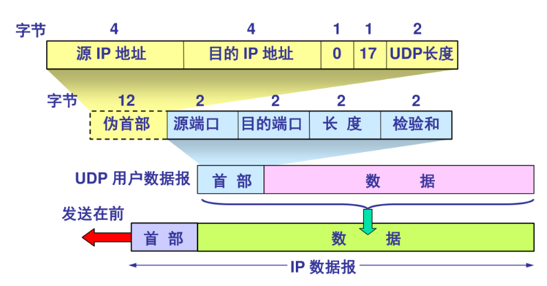
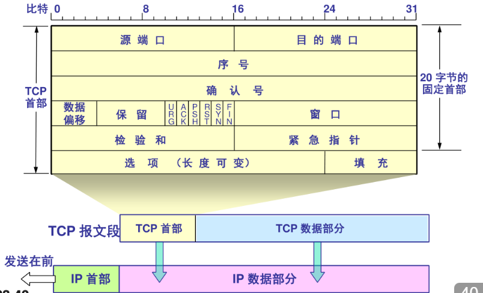
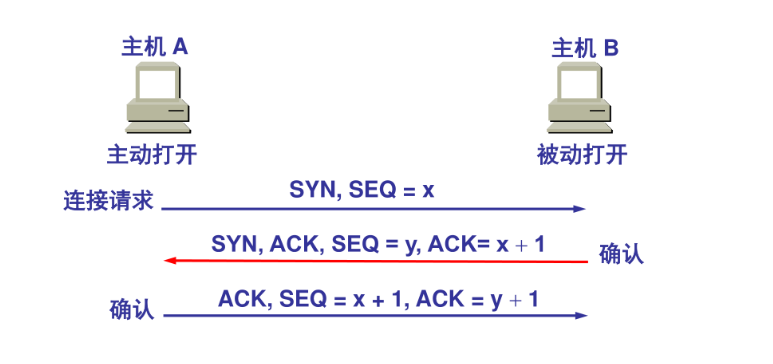
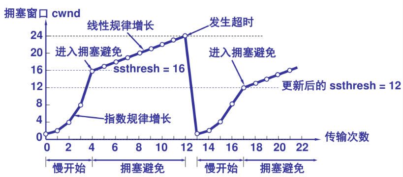

计算机通信与网络 - 3
UDP、TCP
传输层向上面的应用层提供通信服务，同时也是用户功能中的最底层。传输层负责进程到进程的传递。传输层需要两种不同的协议，即面向链接的 TCP 和无连接的 UDP。
端口号用于标识计算机应用层中的各进程，是一个 16 bit 的数字。在因特网中不同计算机的相同端口号是没有联系的。
IANA 是互联网号码分配机构，它统一管理和协调全球互联网的一些关键资源数据，如 IP 地址空间，顶级域名，或者端口号等。
对于端口号的分配，01023 端口由 IANA 统一分配，102449151 端口 IANA 不分配也不控制，可以在 IANA 注册以防止重复，49152~65535 端口不受控制也不受注册，可作为临时端口。
进程到进程的传递需要两个标识符，IP 地址和端口号，这两个结合在一起称为了套接字。
UDP
用户数据报协议称为无连接不可靠的传输层协议。它除了提供进程到进程通信而不是主机到主机的通信外，就没有给 IP 服务添加任何东西。
USP 协议常用的端口有
| 端口号 | 服务/协议 | 用途 |
|---|---|---|
| 53 | DNS | 域名解析 |
| 67 68 | DHCP | 自动为网络中的设备分配 IP 地址 |
| 69 | TFTP | 简单的文件传输 |
| 123 | NTP | 同步计算机和网络设备的时间 |
| 161 162 | SNMP | 网络设备的监控和管理 |
| 500 | ISAKMP/IKE | IPsec VPN 协商的第一阶段 |
| 514 | Syslog | 系统日志传输 |
| 1194 | OpenVPN | OpenVPN 服务默认使用的端口，也可能是 TCP |
| 520 | RIP | 用于路由器间交换路由信息 |

UDP数据报的“长度”是指其自身的总长度。计算校验和时，会临时组合一个包含IP信息的“伪首部”与UDP数据报一同运算，此举是为了进行端到端的正确性验证，但伪首部本身不参与传输。
TCP
TCP 是一个面向链接的协议。它在两个 TCP 之间建立一个虚拟的链接来发送数据。另外，TCP 在传输层使用流量控制和差错控制机制。
TCP 协议常见的端口有
| 端口号 | 服务/协议 | 用途 |
|---|---|---|
| 80 | HTTP | 网页浏览 |
| 443 | HTTPS | 加密网页浏览 |
| 21 | FTP | 文件传输 |
| 22 | SSH | 加密远程登录 |
| 23 | Telnet | 不加密远程登录 |
| 25 | SMTP | 发送电子邮件 |
| 587 | SMTP Submission | 邮件客户端向邮件服务器提交邮件以进行中继 |
| 110 | POP3 | 从服务器下载邮件到本地客户端 |
| 143 | IMAP | 在服务器上管理邮件 |
| 3306 | MySQL | MySQL 服务 |
| 5432 | PostgreSQL | PostgreSQL 服务 |
| 1433 | Microsoft SQL Server | SQL Server 服务 |
| 6379 | redis | redis 服务 |
| 3389 | RDP | 远程桌面协议 |
| 111 | RPC | RPC 远程调用方法 |
TCP 的链接和建立都是采用客户端和服务器的方式。主动发起链接建立的进程都叫客户，被动等待链接建立的应用进程叫服务器。
报文结构

其中的控制字段分以下几种
- URG 紧急指示符字段
- ACK 确认字段
- PSH 将数据推向前
- RST 链接复位
- SYN 在链接时对序列号进行同步
- FIN 终止链接
建立链接
在发送任何应用数据前，TCP 必须先在客户端和服务器间建立可靠的链接。建立链接需要分三步
- SYN
发送方向接收方发送特殊的报文，并随机生成一个初始序列号，说明“我想和你建立连接，我的初始号码是X” - SYN-ACK
接收方收到请求后，会回复一个报文。这个报文同时设置了 SYN 和 ACK 标志位。它确认了客户端的序列号 (ACK = X + 1)，同时也告知己方的初始序列号，说明“我听到了，我同意链接，我的初始号码是Y” - ACK
发送方再发送一个确认报文，ACK 标志位设为1，确认号为 ACK = Y + 1，说明“收到你的确认了，我们可以开始了”

数据传输和可靠性验证
TCP 会将应用层传来的数据流分割成大小合适的数据段。
每个数据段都会被赋予一个唯一的序列号，接收方在成功收到后，会回复一个确认报文，包含它所期望收到的下一个序列号。发送方在发出一个数据段后会启动计时器，诸如此类。同时接收方通过滑动窗口机制来告诉发送方自己还能接收多少数据。
TCP 发送的双方都有一个缓冲区。操作系统内核为每个 TCP 内核都预留了一块内存区域，用于临时存放待发送或已接收的数据。这里的缓冲区可以实现重传机制，以及将无序的数据重新组装等功能。

断开链接
数据发送完毕后，需要进行断开操作。该操作分四步
- FIN 主动关闭方发送 FIN 标志位为 1 的报文，标识“我的数据发完了，想断开链接”
- ACK 被动关闭方收到 FIN 后，回复一个 ACK 进行确认，表示“我知道你要关闭了”。此时主动关闭方已不能发送数据，但被动关闭方可能还有数据要发送
- 被动关闭方也准备好关闭后，会发送自己的 FIN
- 主动关闭方收到 FIN 后，回复最终的 ACK 确认。最后双方链接完全关闭
流量控制
每一个 TCP 链接需要有以下两个状态变量
- 接收端窗口 rwnd
接收端根据其目前的接收缓存大小所许诺的最新窗口值，是来自接收端的流量控制。接收端将此窗口值放在 TCP 报文首部中的窗口字段，传送给发送端 - 拥塞窗口 cwnd
发送端根据自己估计的网络拥塞程度而设置的窗口值，是来自发送端的流量控制。
发送端的发送窗口的上限值为 Min[rwnd, cwnd]。
但是在一开始的时候，双方的窗口数据均未知，又怎么设置一个合适的数值呢？这需要慢开始算法。
- 初始阶段
TCP 链接刚建立或检测到超时（认为发生了网络拥塞）时，发送方会将窗口设置为一个很小的值（1个报文段的大小） - 每一次成功后，就会将拥塞窗口增加一个 MSS。由于 TCP 采用累计确认的机制，在一个传输轮次中，拥塞窗口的实际增长是指数性的。
- 发送方还有个变量叫慢开始阈值。当拥塞窗口增长到慢开始阈值时，慢开始阶段结束，短发将进入拥塞避免阶段。在拥塞避免阶段，窗口的增长方式由指数增长变为线性增长。当发生超时这种严重的拥塞信号时，慢开始阈值将设置为当前拥塞窗口的一半。若窗口被重置为1，则重新开始慢开始过程。

快重传算法是指，当发送端连续收到三个或三个以上重复的ACK时，即可判定某个报文段已经丢失。此时，发送端会立即重传对方所要求的那个报文段，而无需等待重传计时器超时。这是一种基于反馈的主动修复机制，能够有效减少数据等待重传的时延。
快恢复算法与快重传协同工作。当发送端因收到三个重复ACK而触发快重传时，会随即执行快恢复：首先，将慢开始门限（ssthresh） 设置为当前拥塞窗口（cwnd） 值的一半。然后，与慢开始算法不同，它并不将 cwnd 重置为1，而是将 cwnd 设置为新的 ssthresh 值（有些实现会在此基础上加3，以补偿已离开网络的报文段）。在此之后，发送端直接进入拥塞避免阶段，开始线性地增大 cwnd。
TCP 的重传机制
由于 IP 数据报选择的路由变化很大，因而运输层的往返时延的方差也会很大。
记录每一个报文段发出的时间，以及收到响应的确认报文段时间。这两个时间之差就是报文段的往返时延，平均往返时延可以使用自适应算法 (RTT) 解决。
$$
\overline{\text{RTT}}=\alpha \times \text{RTT}_{旧}+(1-\alpha)\times 新的时延样本
$$
其中有 $0\leq \alpha \leq 1$，表示加权。选择的 $\alpha$ 越接近 0，则表示加权极端的平均往返时延受新的时延样本的影响较大。一般取 $\alpha = \frac{7}{8}$。
计时器的超时重传时间 (RTO) 应略大于上面得到的 RTT，即
$$
\text{RTO}=\beta \times \text{RTT}
$$
其中 $\beta >1$。若 $\beta$ 接近1，则表示发送端可及时重传丢失的报文段，效率提高，但可能会加重网络负担。一般设置为2。
利用 Karn 算法，报文段每重传一次，就将重传时间增大一些
$$
新的重传时间=\gamma \times 旧的重传时间
$$
在实时性、速度和速率优先的场景下，通常选择 UDP；在数据准确性和完整性比较重要时，通常选择 TCP
DNS
DNS (Domain Name System) 是将人类易于记忆的域名转换为计算机易于通信的 IP 地址。
域名空间
为了实现无二义性，分配给机器的名字必须从名字空间中仔细选择。该名字空间完全控制对名字和 IP 地址的绑定。为了获取层次结构的名字空间，设计了域名空间。
域名空间是一个层次化的树状结构，就像一棵倒过来的树
- 根域名：最顶端，用
.表示 - 顶级域名：根域名的下一级，表示
.com.org.cn等 - 二级域名：TLD 下，通常由自己注册
- 子域名：自己创建
域名空间可以分为通用域、国家域和反向域三部分。
权威服务器上，域名通过不同类型的记录来定义其功能
- A 记录：域名指向 IPv4 地址
- AAAA 记录：域名指向 IPv6 地址
- CNAME 记录：将一个域名指向另一个域名
- MX 记录：邮件交换记录
- TXT 记录：文本记录，用于验证域名所有权、发送方策略框架等
- NS 记录：域名服务器记录
DNS 劫持是一种网络攻击，它通过修改 DNS 的解析结果，使用户访问的域名指向错误的 IP 地址，从而导致用户无法访问正常的网站。
应用层协议
教学大纲基本不涉及应用层，而且涉及到的都是千禧年代的产物，因此补充的内容特别多，放另几篇上了。
TELNET
用户使用 TELNET 就可以在其所在通道上通过 TCP 链接注册到远地的另一个主机上。然而目前更常用的是加密的 SSH。
SMTP 与 MIME
基于 TCP 协议的发送电子邮箱的协议。注意：SMTP 只负责邮件的发送，而不是接收。要从邮件服务器接收邮件，需要使用 POP3 或 IMAP 协议。二者的区别在于，POP3 协议会将邮件下载到本地，然后通常在服务器上删除，适合单设备管理邮件；而 IMAP 将邮件保留到服务器上，客户端进行的所有操作都会和服务器同步。
MIME 是多用途互联网邮件扩展协议。它不是传输协议，而是一个内容格式标准。它通过在邮件头中添加一系列字段，使SMTP协议能够传输非ASCII字符（如中文）、富文本（HTML）以及二进制文件（如图片、音频、文档等附件）。
这里的定义老旧得被气笑了。MIME 更广泛的用法在以前的文章。它定义的 Content-Type 标准（即“媒体类型”）实在是太有用了，因此被直接采纳并应用于 WWW 或其他互联网协议中。
HTTP
HTTP (Hypertext Transfer Protocol) 超文本传输协议，基于 TCP 协议，用于传输超文本和多媒体内容的协议，主要用于 web 浏览器和服务器的设计中。
WebSocket
WebSocket 是一种基于 TCP 链接的全双工通信协议，即客户端和服务器可以同时发送和接收数据。几乎所有主流较新版本的浏览器都支持该协议，用于弥补 HTTP 协议在持久通信能力上的不足。常用于视频弹幕、实时消息推送、多用户协同编辑。